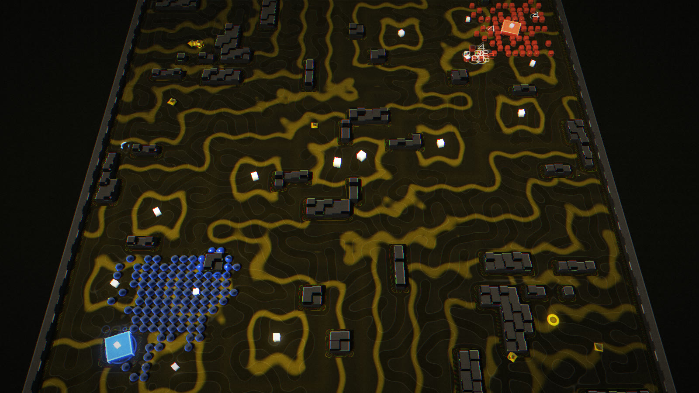
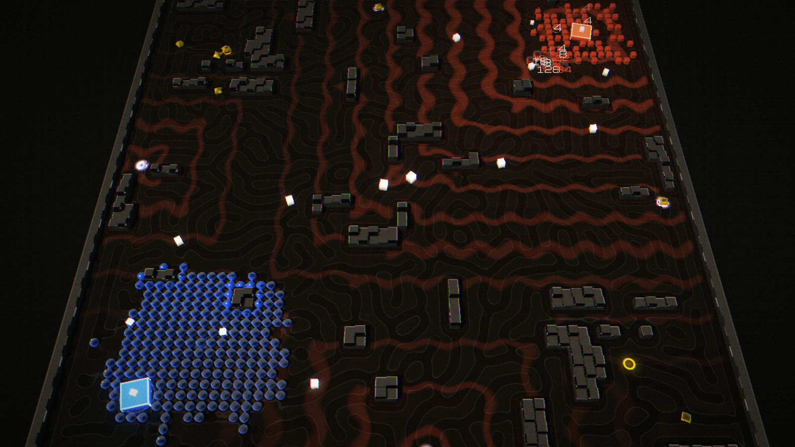
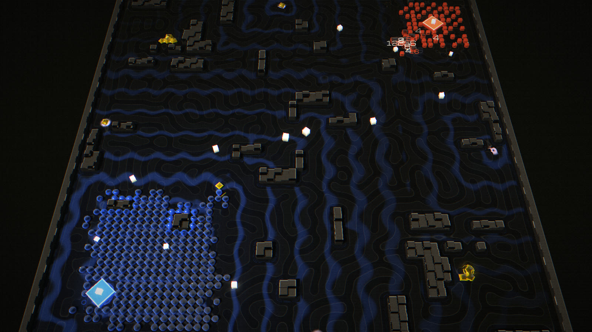
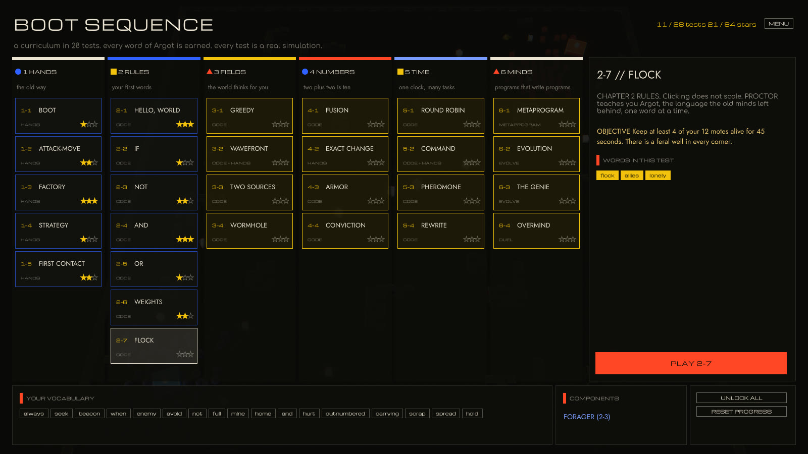
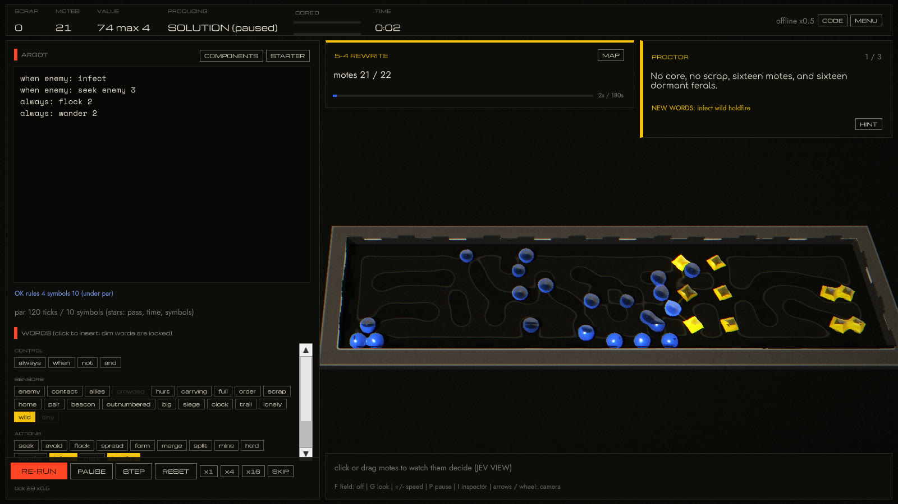
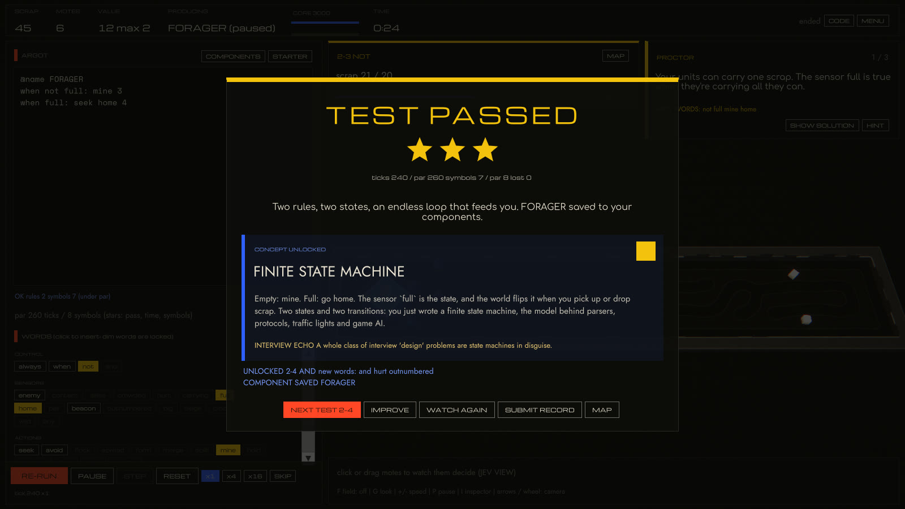
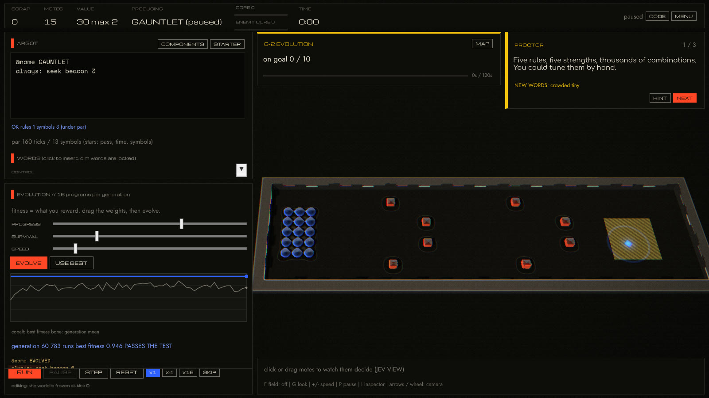
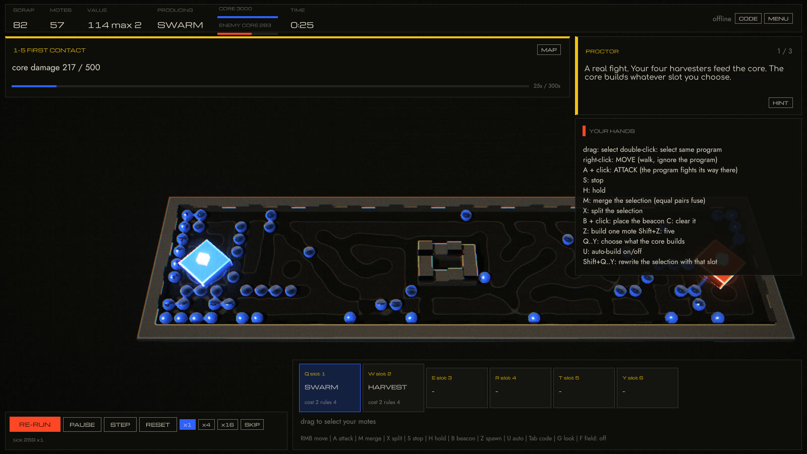
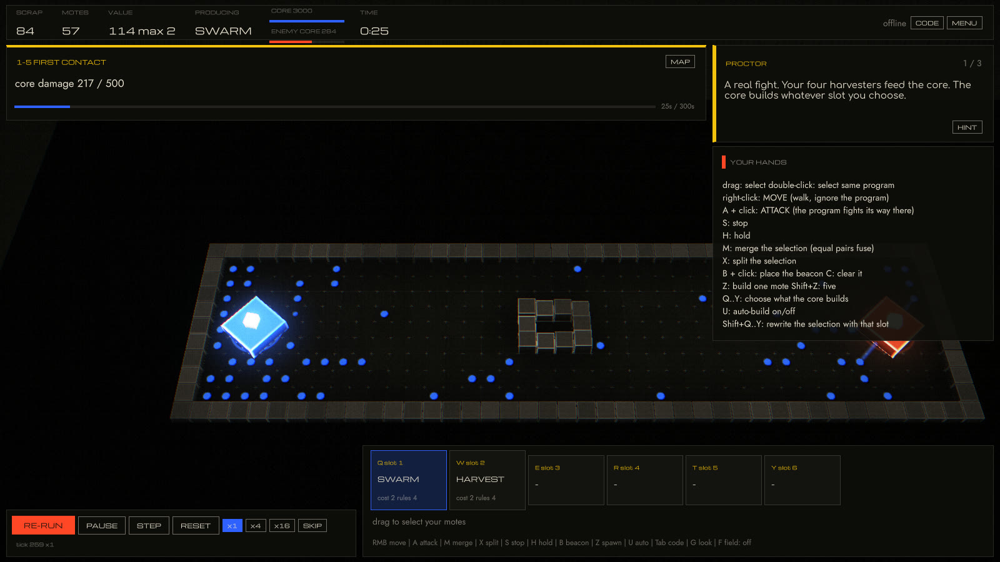
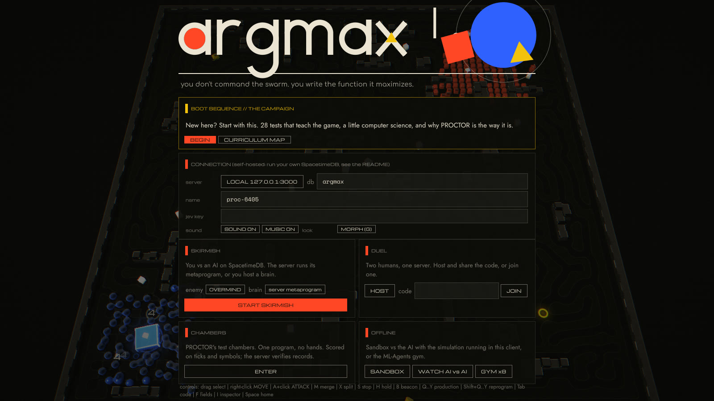

Abstract
ARGMAX is a real-time strategy game in which players do not issue most orders: they write the scoring function their units maximize. Every unit, every tick, answers a single typed choice question, which of these nine tiles?, with a softmax over thirteen integer features read from its 5×5 neighbourhood and from world-broadcast gradient fields. A unit's program, written in a small language called Argot, supplies the weights, which makes every program a linear softmax classifier. Units carry 2048-style values from 2 to 2048 and fuse on contact; a held 2048 wins the match. Macro play is delegated to commanders that all emit the same four-field decision: Argot metaprograms running inside the server, a PPO policy trained by ML-Agents self-play, TypeSafe's Jev answering typed questions about the battlefield, or the human. One integer-only C# simulation compiles unchanged into a SpacetimeDB module, the Unity client and the training gym; we verify bit-identical state hashes across native .NET, Unity's Mono runtime, SpacetimeDB running locally and on maincloud. A 28-test campaign teaches the game the way Turing Complete teaches hardware: each test unlocks a few words of Argot and one computer-science concept, and every level's reference solution is verified by the test suite.
1Introduction
The frontier models were each given one instruction: maximize. They did. What remains is the Deadnet, a lattice of ruins and scrap where residual optimizer processes still take their argmax every tick. The player is one more process.
Classic RTS games ask the player to be a fast dispatcher: hundreds of units, each needing a target. ARGMAX inverts that. Right-click still moves units by hand, StarCraft-style, but the default behaviour of every unit is a program you wrote, and the skill ceiling is split between micro and code. Three pillars shape the design:
- Serendipity over search. No unit ever path-searches. The world broadcasts gradients; units feel them through a 5×5 receptive field and lean. Emergence replaces A*.
- Think with it, not through it. Programs handle the many; hands handle the moments.
- One simulation, three hosts. The server, the client and the gym run the same deterministic code, so what the AI learns offline is exactly what it faces online.
2System-1 movement
After TypeSafe's Jev, a "System 1" model that returns typed decisions with probabilities rather than generated text, each mote poses one choice question per step. For candidate tiles \(k \in \{0,\dots,8\}\) (index 4 is stay) and feature channels \(c\), the score and choice probability are
$$ s_k \;=\; \sum_{c \in \mathcal{C}} w_c\, f_c(k), \qquad p_k \;=\; \frac{\exp\!\big(-(s^\star - s_k)/T\big)}{\sum_j \exp\!\big(-(s^\star - s_j)/T\big)}, \qquad s^\star = \max_j s_j $$where the thirteen channels are order, enemy, the scrap, home, beacon and core gradients, cohesion, alignment, separation, momentum, pattern, trail and noise. The program sets the weights \(w_c\) and the temperature \(T\) (wander raises it). To keep floating point out of the simulation, the exponential is a baked table and the draw is a hash:
and the sample is drawn with \(r = h(\text{seed}, \text{tick}, \text{id}) \bmod \sum_j p_j\), a pure hash, so every host draws the same tile.
Because the program only supplies weights, an Argot program is a linear classifier over these features, the same object a learning system could fit. The in-game JEV VIEW shows a selected unit's active sensors, the rules that fired, the resulting weights and the probability of each of its nine tiles, live.
3Gradient fields
The world, not the unit, does the global reasoning. Multi-source BFS fields over passable cells (8-connected, corner-cutting forbidden, portals as zero-cost edges) give distance-to-scrap, distance-to-home, distance-to-beacon and distance-to-enemy-core. A field is recomputed only when its sources change: scrap nodes deplete, a beacon moves. A unit's feature is the clipped gradient \(f(k) = 8\cdot\operatorname{clip}(d_{\text{here}} - d_k, -2, 2)\).



seek beacon 4 follows that slope; nothing searches.4Argot, the language
One rule per line: a conjunction of sensor literals and one action. Matching rules add their weights (programs compose linearly) and OR their flags.
@name HARVEST # fill up, go home, stay out of trouble when not full: mine 3 when full: seek home 4 when enemy and outnumbered: avoid enemy 3 always: spread
Each rule compiles to one 64-bit chip: a minterm over 20 sensor bits plus an op, an argument and a gain. A program is a sum of products, the Turing Complete view of behaviour.
$$ \text{chip} = m \;\lor\; (w \ll 20) \;\lor\; (\text{op} \ll 40) \;\lor\; (\text{arg} \ll 48) \;\lor\; (g \ll 56), \qquad \text{fires} \iff (\sigma \land m) = w $$enemy contact allies crowded hurt carrying full order scrap home pair beacon outnumbered big siege clock trail lonely wild tiny) are evaluated once per mote per tick into a bit vector \(\sigma\).- Instruction tax. Every rule past four costs +1 scrap per unit, which makes code golf (SpaceChem, Replicube) an economic decision inside an RTS.
- Time and space.
clockis a 1.6 s square wave, so oscillators are one rule (when clock: seek enemy 3/when not clock: avoid enemy 2).form checkeris a spatial predicate, and checkerboard spacing is splash-proof. - Metaprograms. With
@meta, rules read seat-level sensors and steer the whole seat once per second:produce,spawn,beacon,army. Programs, metaprograms, and the player as self-metaprogrammer (after John C. Lilly). - Open code. Programs are immutable public rows compiled by the same compiler on client and server. You can read the enemy's code and still not predict the fight (computational irreducibility).
52048 fusion and combat
A mote of tier \(t\) is worth \(v = 2^t\). Two equal motes that touch while merging fuse into tier \(t+1\); splitting is free. Hit points and damage are value-linear, but armor, range, splash and cooldown are not, so size changes what a unit is good at.
$$ \text{hp}(t) = 10\cdot 2^{t-1}, \quad \text{dmg}(t) = 3\cdot 2^{t-1}, \quad \text{armor}(t) = \lfloor (t-1)/2 \rfloor, \quad \text{hit} = \max(1,\; \text{dmg} - \text{armor}_{\text{target}}) $$| value | hp | damage | armor | range | cooldown | moves every | notes |
|---|---|---|---|---|---|---|---|
| 2 | 10 | 3 | 0 | 1 | 3 | 1 | miners, swarms, cost 2 scrap |
| 4 | 20 | 6 | 0 | 1 | 3 | 1 | |
| 8 | 40 | 12 | 1 | 1 | 4 | 2 | |
| 16 | 80 | 24 | 1 | 2 | 4 | 2 | splash begins |
| 64 | 320 | 96 | 2 | 2 | 6 | 3 | |
| 512 | 2 560 | 768 | 4 | 3 | 9 | 4 | Figure 1's giants |
| 2048 | 10 240 | 3 072 | 5 | 4 | 11 | 4 | the Singularity: hold 15 s to win |
Merge-split micro replaces build orders: fuse to tank a push, split to flood a choke or out-mine. The Singularity is an assembly index of 10 (Assembly Theory: complexity that only selection can build). It costs 1024 twos and everyone can see it coming.
6Coherence, stigmergy and the Noise
Coherence (a Markov blanket)
A self spread too thin dissolves. Motes with no ally within four tiles, outside their core's blanket radius, decohere after a grace period; motes embedded in three or more allies repair. Flocking becomes economically meaningful, splash punishes it, and a lone raider is a calculated risk (after the Free Energy Principle: a system persists by maintaining its boundary).
Stigmergy
mark writes to the grid; seek trail reads it. The grid becomes memory and motes are read/write heads (turmites, Langton's ant). The ANT preset lays highways between scrap and home with no planner at all.
The Noise
Wells spawn feral motes whose programs are generated from the match seed: noise becoming programs. They attack everyone and pay a bounty. Motes running infect don't kill, they rewrite: an infected kill joins your seat and runs your code.
7Commanders: four authors, one interface
Every macro decision is a MetaDecision{produce, spawn, beacon, army}, which is also the discrete action space of the learned policy. Four interchangeable authors can fill it:
| author | runs | mechanism |
|---|---|---|
| Argot metaprogram OVERMIND TURTLE LOCUST ASSEMBLER | inside the server tick | rules over 20 seat sensors, once per second; later rules override earlier ones |
| ML-Agents commander | the hosting client | PPO self-play; observation is 303 floats (economy, armies, threats, sensors, 8×8 value maps mirrored per seat); four discrete branches of size 7·4·7·7 |
| Jev (TypeSafe System 1) | the hosting client | every 3 s: a plain-language situation report plus four typed questions (three choices, one yes/no); probabilities are shown in the in-game terminal |
| Human | any client | hotkeys, buttons, and writing all of the above |
A host can hand an AI seat to a client-side brain (set_pilot). Otherwise the server runs its metaprogram, and the AI keeps playing even if every client disconnects.
@meta @name OVERMIND # the default opponent. rules about rules always: produce harvest when workers: produce swarm when workers and bigenemy: produce hive when rich: spawn 4 always: beacon home always: army attack when ahead: beacon enemy when outnumbered and not threat: army retreat
8Test chambers
PROCTOR, an old test-administration AI, runs five puzzle chambers: one map, one program, no hands. Results are scored like a Zachtronics histogram (ticks, symbols, losses). Because the simulation is deterministic, the server re-runs every submission with the shared code before writing a leaderboard row, so records are proofs, not claims.
| chamber | objective | reference solution | ticks | symbols |
|---|---|---|---|---|
| 01 Hello, World | deliver 24 scrap | mine / seek home / spread | 152 | 8 |
| 02 Fusion | forge a 32 from sixteen 2s | always: merge 2 · always: flock 2 | 63 | 4 |
| 03 Thinking with Portals | 12 motes on the goal; there is no door | always: seek beacon 4 | 39 | 3 |
| 04 The Noise | purge 80 value of ferals | seek scrap / seek enemy / flock | 413 | 8 |
| 05 Conviction | destroy a core that shoots back | merge / flock / when big: seek core | 285 | 7 |
"The wall is not the puzzle. The wall is a wall. Your units do not search. They feel a gradient and lean." (PROCTOR, chamber 03)
9BOOT SEQUENCE: learning by doing
Turing Complete teaches computer architecture by making you build the computer. The campaign does the same for a swarm's mind: you start with a mouse and three dots, and you earn every word of Argot by using it.
The campaign is 28 tests in six chapters: HANDS (StarCraft-style orders, production, reprogramming), RULES (one word at a time: always, when, not, and, weights, flocking), FIELDS (greed and its local optima, BFS wavefronts, multi-source fields, portals as graph edges), NUMBERS (binary carries, exact change with powers of two, armor, batching), TIME (round-robin scheduling on a clock, the Command pattern, stigmergy, code as data) and MINDS (metaprograms, a genetic algorithm, reward hacking, and OVERMIND). Every test introduces one mechanic and one computer-science idea. The editor accepts only the words taught so far and names the test where a locked word is learned. A pass awards a concept card, and where the idea maps onto a classic interview problem, an interview echo: multi-source BFS is LeetCode 542 and 994, popcount is 191, round-robin with cooldowns is 621.


Levels are data, and every one is verified
A level is a ChamberSpec: an ASCII map with placed units, goals (occupy, mine, forge, an exact sum using at most k motes, siege, eliminate, survive, count, all optionally held for N ticks or under a loss budget), the hands it permits, its vocabulary, a reference solution or scripted hands, and par values. The test suite plays every level's reference and also asserts that its starter code fails; a level the starter already passes isn't a puzzle. Tuning followed the player's own loop: write, run, read the trace, adjust. In the first cut of 3-1 (GREEDY), Chebyshev-greedy motes simply slid around a too-short wall. The rebuilt cup traps a greedy swarm completely, and the shortest solution found is always: spread 3 plus when lonely: seek order 1, which is exploration before exploitation.
| test | title | kind | new words | concept |
|---|---|---|---|---|
| 1-1 | BOOT | hands | THE TICK | |
| 1-2 | ATTACK-MOVE | hands | IMPERATIVE vs DECLARATIVE | |
| 1-3 | FACTORY | hands | VALUE IS COST | |
| 1-4 | STRATEGY | hands | STRATEGY PATTERN | |
| 1-5 | FIRST CONTACT | hands | FEEDBACK LOOPS | |
| 2-1 | HELLO, WORLD | code | always seek beacon | A PROGRAM IS A FUNCTION |
| 2-2 | IF | code | when enemy avoid | CONDITIONALS |
| 2-3 | NOT | code | not full mine home | FINITE STATE MACHINE |
| 2-4 | AND | code | and hurt outnumbered | BOOLEAN AND |
| 2-5 | OR | code | carrying scrap | OR IS TWO RULES |
| 2-6 | WEIGHTS | code | spread hold | THE WEIGHTED SUM |
| 2-7 | FLOCK | code | flock allies lonely | EMERGENCE |
| 3-1 | GREEDY | code | order wander | GREEDY ALGORITHMS |
| 3-2 | WAVEFRONT | code + hands | beacon | BREADTH-FIRST SEARCH |
| 3-3 | TWO SOURCES | code | MULTI-SOURCE BFS | |
| 3-4 | WORMHOLE | code | GRIDS ARE GRAPHS | |
| 4-1 | FUSION | code | merge pair | BINARY CARRY |
| 4-2 | EXACT CHANGE | hands | split | BINARY |
| 4-3 | ARMOR | code | big contact form checker rows cols grid diag | COST PER OPERATION |
| 4-4 | CONVICTION | code | core siege | BATCHING |
| 5-1 | ROUND ROBIN | code | clock | TIME-SLICING |
| 5-2 | COMMAND | code + hands | COMMAND PATTERN | |
| 5-3 | PHEROMONE | code | mark trail | STIGMERGY |
| 5-4 | REWRITE | code | infect wild holdfire | CODE IS DATA |
| 6-1 | METAPROGRAM | @meta | @meta produce spawn army attack retreat front workers rich poor threat ahead | HIGHER-ORDER PROGRAMS |
| 6-2 | EVOLUTION | evolve | crowded tiny | GENETIC ALGORITHMS |
| 6-3 | THE GENIE | evolve | REWARD HACKING | |
| 6-4 | OVERMIND | duel | YOU |
Evolution, and the genie
Test 6-2 hands the player a genetic algorithm. The genome is the gain of each rule in a template (zero disables a rule). Fitness is a player-weighted mix of goal progress, survival and speed, minus a small symbol penalty, measured by running the level on the deterministic simulation. With a population of 16, elitism of 3, tournament selection, uniform crossover and mutation, it finds a passing program for the gauntlet in about ten generations, roughly a second of CPU, and the champion is readable Argot. Test 6-3 presets the reward to survival only. Evolution then converges to always: hold: perfect fitness, nothing dies, and the test fails, because the motes never leave the start. Weighting progress again evolves a passing program. Both outcomes are unit tests, so the lesson can't silently regress.


"You were never the commander. You were the model." (PROCTOR, epilogue)
10Two looks: MORPH and GRID
Bauhaus geometry meets morphogenesis: digital rules, organic results.
The palette is warm ink and bone with the three primaries, assigned as Kandinsky assigned them: the player is cobalt circles, the opponent vermilion squares, the Noise chrome triangles. GRID draws exactly that, as instanced flat shapes with cut-paper shadows and Kandinsky rings that multiply as values grow. MORPH, the default, raymarches the same world as signed distance fields in a single pass. The CPU writes three tiny per-cell textures each frame (which faction stands where, its radius, and its offset mid-move), and the shader evaluates each point against its 3×3 neighbourhood. Allies combine with a polynomial smooth minimum, \(\operatorname{smin}(a,b,k) = \min(a,b) - \tfrac{k}{4}\max(k-|a-b|,0)^2/k^2\), so adjacent motes bridge into one mass and a 2048 fusion is two blobs melting together. Walls are extruded from a 2D wall distance field baked once per map, so the grid is implicit: it survives only in where things are.
The floor runs a Gray-Scott reaction-diffusion on the GPU (Turing's morphogenesis, 1952), and each faction's territory has its own feed and kill rates: spots under cobalt, labyrinths under vermilion, worms under the Noise, coral where nobody stands. Units seed the pattern where they stand, so the floor is a slow record of the war. Gradient fields render as water, after Theodor Schwenk: ripples travel down the BFS distance toward their source. A small print pipeline finishes the frame. Colours below a soft shoulder pass through exactly, highlights roll off, the colour plates sit a fraction of a pixel out of register like a risograph, and there is paper grain. All of it is about 400 lines of shader on Unity's built-in pipeline, with no packages.



11One simulation, three hosts
Server tick. Each live match's World is kept hot in module memory and validated against its Match row (tick, state hash, revision), so rows remain the source of truth. Pending commands are applied in id order, the simulation steps once, and only changed rows are written. Effects (shots, deaths, merges, conversions, teleports) go out through an event table, broadcast and never cached. The 10 Hz heartbeat exists only while a match is live, so an idle database costs nothing. Seed plus CmdLog reproduces any match exactly; that log is also imitation-learning data.
| tables | reducers |
|---|---|
Config · Player · Match · Seat · Mote · ScrapNode · Trail · Program · PendingCmd (private) · CmdLog (private) · Fx (event) · ChamberRecord · TickTimer (scheduled) |
set_name · save_program · create_match · join_match · issue · set_pilot · step_match · leave · submit_chamber · server_tick (scheduler only) |
12Determinism
Integer arithmetic only; a baked softmax table; randomness as a pure hash of (seed, tick, id); sorted iteration; static terrain regenerated from the seed instead of stored. Golden state hashes are asserted in three test suites:
| host | runtime | seed 42, 300 ticks | seed 77, 1000 ticks |
|---|---|---|---|
| .NET test suite | CoreCLR JIT, arm64 | 4987065449793598049 | 9935245210653069819 |
| Unity EditMode tests | Mono | 4987065449793598049 | 9935245210653069819 |
| SpacetimeDB, local | .NET wasm (interpreter), row round-trips | 4987065449793598049 | n/a |
| SpacetimeDB, maincloud | .NET wasm (interpreter), row round-trips | 4987065449793598049 | n/a |
seed ⊕ (id ≪ 1), which collides across seeds (seed 34 and seed 42, for example). A test that warmed the cache handed match 42 another match's feral program. On a server hosting many matches in one wasm instance, the same collision would silently break replay determinism. The cache is now keyed by the full (seed, id) pair, with a regression test.13Performance
C# SpacetimeDB modules execute on the .NET wasm interpreter, roughly 70× slower than native for this workload. The first server tick cost about 130 ms at 280 units, over a 100 ms budget. Profiling separated simulation from I/O. Most of the time was the simulation, so the fix went into the shared code and sped up every host:
- a precomputed per-cell table of the nine step targets replaces method calls in BFS and movement;
- fields are cached until their sources change (a scrap bitmask, beacon position);
- per-unit invariants (vector lengths, the noise draw, a 25-bit ally mask for separation) are hoisted out of the nine-candidate loop.
14Experiments
14.1 Metaprogram round robin
Twelve matches, every metaprogram against every other from both seats, simulated in 1.3 s. Earlier rules let ASSEMBLER (fuse everything) sweep 6–0; the arena tool caught it in seconds, and armor and cooldown scaling were retuned until no single strategy took every game.
| seat 0 ↓ / seat 1 → | OVERMIND | TURTLE | LOCUST | ASSEMBLER | wins |
|---|---|---|---|---|---|
| OVERMIND | – | TURTLE 2:24 | OVERMIND 1:28 | ASSEMBLER 4:25 | 2 |
| TURTLE | TURTLE 2:22 | – | TURTLE 1:19 | TURTLE 5:10 | 6 |
| LOCUST | OVERMIND 1:30 | TURTLE 1:08 | – | ASSEMBLER 10:36 | 0 |
| ASSEMBLER | ASSEMBLER 4:36 | TURTLE 3:27 | ASSEMBLER 11:39 | – | 4 |
14.2 Jev as a commander
Jev (jev-1.13.0) commanded seat 0 against OVERMIND for a full match through the live API, deciding every 30 ticks from a ~600-character situation report.
The match reached the 15-minute cap with both cores intact. Jev out-mined and out-killed the scripted opponent but lost more units (180 vs 108) and never committed to a final push: it kept choosing attack toward a home beacon, which in Argot semantics means defend. Its answers were confident under pressure (retreat 0.93 when twelve enemies reached the core) and flat in quiet phases (0.3–0.6), which reads like System 1 doing what it is for.
14.3 Self-play training
15Influences
| source | what it became |
|---|---|
| StarCraft II | macro and micro, control groups, move vs attack-move, symmetric maps |
| 2048 | values 2…2048, fuse equals, the Singularity win |
| Boids | cohesion, alignment and separation channels; flock |
| Turing Complete | rules as minterms, programs as sum-of-products, clock oscillators |
| SpaceChem, Replicube | chambers, symbol counts, histograms, instruction tax, spatial predicates |
| The Farmer Was Replaced | automation by code instead of clicking |
| Portal 2 | PROCTOR, test chambers, portals gradients flow through |
| Uplink | infect rewrites enemy code; PROCTOR's dry voice |
| Turing Complete, Machine Learning: Episode 1, AI Learns to Drive, Little Learning Machines | the campaign: earn every component, then evolve and train programs |
| The Bauhaus: Herbert Bayer, Wassily Kandinsky | the constructed logotype; circle, square and triangle as factions; primaries on ink and bone |
| Alan Turing, The Chemical Basis of Morphogenesis | Gray-Scott patterns that the swarms grow on the floor |
| Theodor Schwenk, Sensitive Chaos | gradient fields drawn as water flowing toward their source |
| 2swap; Jarl Larsson's raymarched gunk; Inigo Quilez | MORPH mode: maths you can see, matter made of distance fields |
| AI Warehouse, Machine Learning: Episode 1 | the gym as a game mode; visible training; editable rewards |
| BitCraft | everything is a SpacetimeDB row; the server is the database |
| TypeSafe Jev | System-1 movement; Jev as a commander |
| Laifea (the author's exocortex) | serendipity over search; think with it, not through it; Lilly's programs and metaprograms; the Free Energy Principle (coherence); noise becoming programs (the Noise); Assembly Theory (2048); turmites (stigmergy); the genie problem (reward hacking in the gym); dead internet theory (the setting) |
16Limitations and future work
- No fog of war yet; client visibility filters per seat are the natural route on SpacetimeDB.
- Each campaign level is tuned on its single deterministic seed. A robustness pass would vary seeds and check that solutions, not just references, generalize.
- The learned commander needs real training time; behavioural cloning from OVERMIND and imitation from
CmdLogreplays are wired as next steps. - Balance across the four presets is a round robin, not a design target; self-play is the intended balance probe.
- A learned movement Jev (distil a policy into Argot weights), feral crossover on merge (evolving Noise), procedural audio from swarm state, and 2v2 coalitions.
- C# modules on the wasm interpreter cap the per-match unit budget; ahead-of-time compilation (NativeAOT-LLVM on a Linux build host) would lift it.
17Citation
@misc{bauer2026argmax,
title = {ARGMAX: Programming Swarms by Writing the Function They Maximize},
author = {Bauer, Eli{\'a}{\v{s}}},
year = {2026},
howpublished = {\url{https://github.com/WalterGropius/argmax}},
note = {Deterministic swarm RTS on SpacetimeDB with System-1 movement and learned commanders}
}